<title>Jinyuan Li</title>
<meta name="claude:viewport-fit-sides" content="cover">
<meta name="description" content="Jinyuan Li — student historian and scientist at Shenzhen College of International Education.">
<link rel="preconnect" href="https://fonts.googleapis.com">
<link rel="preconnect" href="https://fonts.gstatic.com" crossorigin>
<link rel="stylesheet" href="https://fonts.googleapis.com/css2?family=Cinzel:wght@500;600;700&family=Spectral:ital,wght@0,300;0,400;0,500;0,600;1,400&family=IBM+Plex+Mono:wght@400;500&display=swap">
<style>
/* Layout: a lapis title band with framed portrait photos, a highlights ledger, then five Latin-named chapters, each opened by an inscription headword and its dictionary gloss. */
:root {
  --bg: #f5f6f8;
  --surface: #ffffff;
  --ink: #18202e;
  --muted: #5a6476;
  --rule: #dde1e8;
  --lapis: #1f3a70;
  --lapis-deep: #142a55;
  --lapis-soft: #e8edf6;
  --gilt: #a67c1c;
  --gilt-bright: #d8b25a;
  --on-lapis: #f5f6f8;
  --on-lapis-muted: #b9c5dc;
  --display: "Cinzel", "Trajan Pro", Georgia, serif;
  --body: "Spectral", Georgia, "Times New Roman", serif;
  --mono: "IBM Plex Mono", ui-monospace, Consolas, monospace;
  color-scheme: light;
}

* { box-sizing: border-box; }
html { scroll-behavior: smooth; scroll-padding-top: 76px; }
body {
  background: var(--bg); color: var(--ink);
  font-family: var(--body); font-size: 1.0625rem; line-height: 1.7;
  -webkit-font-smoothing: antialiased;
}
body::before {
  content: ""; position: fixed; inset: 0 0 auto;
  height: env(safe-area-inset-top, 0px); z-index: 10; background: var(--surface);
}
a { color: var(--lapis); text-underline-offset: 3px; }
a:focus-visible { outline: 2px solid var(--gilt); outline-offset: 3px; border-radius: 2px; }
h1, h2, h3 { text-wrap: balance; margin: 0; }
p { margin: 0; }

.wrap {
  max-width: 1080px; margin: 0 auto;
  padding-left: max(20px, env(safe-area-inset-left, 0px));
  padding-right: max(20px, env(safe-area-inset-right, 0px));
}

/* Navigation */
nav {
  position: sticky; top: env(safe-area-inset-top, 0px); z-index: 5;
  background: var(--surface);
  border-bottom: 1px solid var(--rule);
}
nav .wrap { display: flex; align-items: center; justify-content: space-between; gap: 16px; padding-block: 16px; flex-wrap: wrap; }
nav .name { font-family: var(--display); font-weight: 700; font-size: 1.05rem; letter-spacing: .1em; text-decoration: none; color: var(--lapis); }
nav ul { list-style: none; margin: 0; padding: 0; display: flex; gap: clamp(14px, 3vw, 32px); flex-wrap: wrap; }
nav ul a {
  font-family: var(--display); font-size: .8rem; font-weight: 600; letter-spacing: .16em;
  text-decoration: none; color: var(--muted); padding-block: 4px;
  border-bottom: 1px solid transparent; transition: color .2s, border-color .2s;
}
nav ul a:hover, nav ul a.active { color: var(--lapis); border-bottom-color: var(--gilt); }

/* Hero */
.hero { background: var(--lapis); color: var(--on-lapis); position: relative; overflow: hidden; }
.hero::after {
  content: ""; position: absolute; inset: 0; pointer-events: none;
  background: radial-gradient(ellipse 60% 80% at 85% 40%, var(--lapis-soft) 0%, transparent 70%);
  opacity: .08;
}
.hero .wrap {
  position: relative; z-index: 1;
  display: grid; gap: 48px; grid-template-columns: minmax(0, 1.5fr) minmax(0, 1fr);
  align-items: center; padding-block: clamp(56px, 9vw, 110px) clamp(48px, 7vw, 88px);
}
.eyebrow { font-family: var(--mono); font-size: .78rem; letter-spacing: .16em; text-transform: uppercase; color: var(--gilt-bright); }
.hero h1 {
  margin-top: 18px;
  font-family: var(--display); font-weight: 600;
  font-size: clamp(3rem, 8.5vw, 6rem); line-height: 1; letter-spacing: .05em;
}
.hero .role { margin-top: 18px; font-size: 1.2rem; color: var(--on-lapis-muted); }
.hero .intro { margin-top: 26px; max-width: 32em; font-size: 1.2rem; font-weight: 300; line-height: 1.65; }
.fields { margin-top: 30px; display: flex; flex-wrap: wrap; gap: 10px; list-style: none; padding: 0; }
.fields li {
  font-family: var(--mono); font-size: .78rem; letter-spacing: .06em;
  padding: 6px 12px; border: 1px solid color-mix(in srgb, var(--on-lapis) 30%, transparent); color: var(--on-lapis);
}
.portrait { position: relative; width: 100%; max-width: 340px; justify-self: end; padding-bottom: 64px; }
.portrait button { display: block; padding: 0; border: 0; background: none; cursor: zoom-in; width: 100%; }
.portrait img { display: block; width: 100%; max-width: 100%; object-fit: cover; }
.portrait .main img { aspect-ratio: 3 / 4; outline: 1px solid var(--gilt-bright); outline-offset: 8px; }
.portrait .inset { position: absolute; left: -64px; bottom: 0; width: 64%; }
.portrait .inset img { aspect-ratio: 3 / 2; border: 4px solid var(--surface); box-shadow: 0 10px 30px rgba(10, 20, 40, .35); }
@media (prefers-reduced-motion: no-preference) {
  .hero-copy > * { animation: rise .7s ease-out both; }
  .hero-copy > *:nth-child(2) { animation-delay: .08s; }
  .hero-copy > *:nth-child(3) { animation-delay: .16s; }
  .hero-copy > *:nth-child(4) { animation-delay: .24s; }
  .hero-copy > *:nth-child(5) { animation-delay: .32s; }
}
@keyframes rise { from { transform: translateY(10px); } to { transform: none; } }

/* Highlights ledger */
.ledger { background: var(--surface); border-bottom: 1px solid var(--rule); }
.ledger ul { list-style: none; margin: 0; padding: 0; display: grid; grid-template-columns: repeat(4, minmax(0, 1fr)); }
.ledger li { padding: 28px 24px; border-left: 1px solid var(--rule); display: grid; gap: 4px; align-content: start; }
.ledger li:first-child { border-left: 0; padding-left: 0; }
.ledger strong { font-family: var(--display); font-weight: 600; font-size: 1.35rem; color: var(--lapis); letter-spacing: .02em; line-height: 1.2; }
.ledger span { font-size: .95rem; color: var(--muted); line-height: 1.45; }

/* Featured documentary */
.featured { padding-block: clamp(48px, 6vw, 72px) 0; }
.featured .card {
  background: var(--surface); border: 1px solid var(--rule); border-top: 3px solid var(--gilt);
  padding: clamp(24px, 4vw, 40px); display: grid; grid-template-columns: minmax(0, 1fr) minmax(0, 2fr); gap: 32px; align-items: start;
}
.kind { font-family: var(--mono); font-size: .75rem; letter-spacing: .14em; text-transform: uppercase; color: var(--gilt); }
.featured h3 { margin-top: 8px; font-size: 1.6rem; font-weight: 500; line-height: 1.25; }
.featured p { color: var(--muted); font-size: 1.1rem; }

/* Chapter headings */
section.chapter { padding-block: clamp(64px, 9vw, 104px); }
section.chapter.alt { background: var(--surface); border-block: 1px solid var(--rule); }
.headword { display: grid; gap: 8px; margin-bottom: 48px; max-width: 42em; }
.headword .en { font-family: var(--mono); font-size: .78rem; letter-spacing: .16em; text-transform: uppercase; color: var(--gilt); }
.headword h2 {
  font-family: var(--display); font-weight: 600; letter-spacing: .06em; color: var(--lapis);
  font-size: clamp(2.4rem, 6vw, 3.75rem); line-height: 1.05;
}
.gloss { font-style: italic; color: var(--muted); }
.lede { margin-top: 10px; font-size: 1.25rem; font-weight: 300; }
.headword::after { content: ""; width: 56px; height: 2px; background: var(--gilt); margin-top: 14px; }

/* Passio */
.passions { display: grid; grid-template-columns: repeat(4, minmax(0, 1fr)); gap: 20px; }
.passions article {
  position: relative; padding: 24px; background: var(--bg); border: 1px solid var(--rule);
  display: grid; gap: 10px; grid-template-rows: auto 1fr auto;
  transition: border-color .2s, transform .2s;
}
.passions article:hover, .passions article:focus-within { border-color: var(--lapis); transform: translateY(-2px); }
.passions h3 { font-family: var(--display); font-weight: 600; font-size: 1rem; letter-spacing: .12em; color: var(--lapis); }
.passions p { font-size: 1rem; line-height: 1.6; }
.peek {
  justify-self: start; padding: 0; border: 0; background: none; cursor: pointer;
  font-family: var(--mono); font-size: .76rem; letter-spacing: .06em; color: var(--gilt);
  display: inline-flex; align-items: center; gap: 8px; margin-top: 6px;
}
.peek::after { content: ""; position: absolute; inset: 0; }
.peek:focus-visible { outline: none; }
.passions article:has(.peek:focus-visible) { outline: 2px solid var(--gilt); outline-offset: 3px; }
.peek .stack { display: inline-flex; }
.peek .stack img { width: 26px; height: 26px; object-fit: cover; border: 2px solid var(--bg); border-radius: 50%; margin-left: -8px; }
.peek .stack img:first-child { margin-left: 0; }
.hint { margin-top: 10px; font-family: var(--mono); font-size: .78rem; letter-spacing: .06em; color: var(--gilt); }

/* Laurea */
.laurels { display: grid; gap: 44px; }
.year { display: grid; grid-template-columns: 10rem minmax(0, 1fr); gap: 28px; }
.year h3 { font-family: var(--display); font-weight: 600; font-size: 1.05rem; letter-spacing: .12em; color: var(--lapis); padding-top: 10px; }
.year ol { list-style: none; margin: 0; padding: 0; background: var(--surface); border: 1px solid var(--rule); }
.year li { display: grid; grid-template-columns: 7rem minmax(0, 1fr) auto; gap: 16px; align-items: baseline; padding: 14px 20px; border-top: 1px solid var(--rule); }
.year li:first-child { border-top: 0; }
.year time { font-family: var(--mono); font-size: .85rem; color: var(--muted); font-variant-numeric: tabular-nums; }
.medal {
  font-family: var(--mono); font-size: .7rem; letter-spacing: .1em; text-transform: uppercase;
  padding: 2px 8px; border: 1px solid var(--rule); color: var(--muted); white-space: nowrap;
}
.medal.gold { border-color: var(--gilt); color: var(--gilt); background: color-mix(in srgb, var(--gilt) 8%, transparent); }

/* Fabulae */
.stories { display: grid; gap: 0; }
.story { display: grid; grid-template-columns: 10rem minmax(0, 1fr); gap: 28px; padding-block: 36px; border-top: 1px solid var(--rule); }
.story:first-child { border-top: 0; padding-top: 0; }
.story .when { font-family: var(--mono); font-size: .8rem; letter-spacing: .08em; text-transform: uppercase; color: var(--gilt); padding-top: 8px; }
.story .body { display: grid; gap: 14px; max-width: 42em; }
.story h3 { font-size: 1.55rem; font-weight: 500; line-height: 1.25; }
.story .cite { font-style: italic; color: var(--muted); }
.story.opus .body {
  max-width: none; background: var(--lapis-soft); border: 1px solid var(--rule); border-left: 3px solid var(--lapis);
  padding: clamp(22px, 4vw, 36px);
}
.story.opus h3 { font-family: var(--display); font-weight: 600; font-size: 1.6rem; letter-spacing: .03em; color: var(--lapis); }
.story.opus .body > p { max-width: 42em; }
.story blockquote { margin: 0; padding: 4px 0 4px 20px; border-left: 2px solid var(--gilt); font-style: italic; font-size: 1.1rem; max-width: 40em; }
.links { display: flex; flex-wrap: wrap; gap: 10px; align-items: center; }
.btn {
  display: inline-flex; align-items: center; gap: 8px;
  font-family: var(--mono); font-size: .8rem; letter-spacing: .04em;
  padding: 9px 16px; border: 1px solid var(--lapis); color: var(--lapis); background: var(--surface); text-decoration: none;
  transition: background .2s, color .2s;
}
.btn:hover { background: var(--lapis); color: var(--on-lapis); }
.status { font-family: var(--mono); font-size: .78rem; color: var(--muted); letter-spacing: .04em; }
.doc {
  justify-self: start; width: 100%; max-width: 420px; padding: 8px; margin: 0;
  background: var(--surface); border: 1px solid var(--rule); cursor: zoom-in;
  box-shadow: 0 6px 20px rgba(20, 32, 60, .08); transition: box-shadow .2s, transform .2s;
}
.doc:hover { box-shadow: 0 10px 28px rgba(20, 32, 60, .16); transform: translateY(-2px); }
.doc img { display: block; width: 100%; max-width: 100%; }
.doc.letter { max-width: 300px; }

/* Shared photo figures */
.shot { margin: 0; display: grid; gap: 8px; }
.shot button { display: block; width: 100%; padding: 0; border: 0; background: var(--lapis-soft); cursor: zoom-in; overflow: hidden; }
.shot img { display: block; width: 100%; max-width: 100%; aspect-ratio: 4 / 3; object-fit: cover; transition: transform .4s; }
.shot button:hover img { transform: scale(1.03); }
.shot img.contain { object-fit: contain; }
.shot figcaption { font-size: .9rem; font-style: italic; color: var(--muted); line-height: 1.5; }
.shot-pair { display: grid; grid-template-columns: repeat(2, minmax(0, 1fr)); gap: 12px; }
.shot-pair + figcaption, .pair-caption { font-size: .9rem; font-style: italic; color: var(--muted); line-height: 1.5; }
:is(.shot, .doc, .portrait) button:focus-visible, .doc:focus-visible { outline: 2px solid var(--gilt); outline-offset: 3px; }

/* Ars */
.ars { display: grid; grid-template-columns: repeat(2, minmax(0, 1fr)); gap: 20px; }
.ars article { background: var(--bg); border: 1px solid var(--rule); padding: 28px; display: grid; gap: 10px; align-content: start; }
.ars article.wide { grid-column: 1 / -1; background: var(--lapis); border-color: var(--lapis); color: var(--on-lapis); }
.ars article.wide .tag { color: var(--gilt-bright); }
.ars article.wide p { color: var(--on-lapis-muted); max-width: 46em; }
.ars .tag { font-family: var(--mono); font-size: .72rem; letter-spacing: .14em; text-transform: uppercase; color: var(--gilt); }
.ars h3 { font-size: 1.3rem; font-weight: 500; line-height: 1.3; }
.ars p { font-size: 1rem; line-height: 1.65; }
.ars article > .shot, .ars article > .shot-pair, .ars article > .pair-caption { order: 9; }
.ars article > .shot, .ars article > .shot-pair { margin-top: 10px; }
.ars article.wide { grid-template-columns: minmax(0, 1fr) minmax(0, 1fr); grid-template-rows: auto auto auto 1fr; column-gap: 36px; }
.ars article.wide > * { grid-column: 1; }
.ars article.wide > .wide-shots { grid-column: 2; grid-row: 1 / span 4; display: grid; gap: 16px; align-content: start; }
.ars article.wide .shot figcaption { color: var(--on-lapis-muted); }

/* Photo viewer */
dialog.viewer {
  width: min(1100px, 100vw); max-width: 100vw; max-height: 100dvh; height: 100dvh; margin: 0 auto; padding: 0; border: 0;
  background: transparent; color: var(--on-lapis);
}
dialog.viewer::backdrop { background: rgba(10, 16, 30, .9); }
.viewer-inner {
  height: 100%; display: grid; grid-template-rows: auto minmax(0, 1fr) auto auto; gap: 14px;
  padding-block: max(16px, env(safe-area-inset-top, 0px)) max(16px, env(safe-area-inset-bottom, 0px));
  padding-left: max(16px, env(safe-area-inset-left, 0px)); padding-right: max(16px, env(safe-area-inset-right, 0px));
}
.viewer-top { display: flex; justify-content: space-between; align-items: center; gap: 16px; }
.viewer-title { font-family: var(--display); font-weight: 600; letter-spacing: .12em; font-size: 1.05rem; }
.viewer-count { font-family: var(--mono); font-size: .8rem; color: var(--on-lapis-muted); margin-left: 12px; font-variant-numeric: tabular-nums; }
.viewer-stage { position: relative; display: grid; place-items: center; min-height: 0; }
.viewer-stage img { position: absolute; inset: 0; margin: auto; max-width: 100%; max-height: 100%; object-fit: contain; display: block; }
[hidden] { display: none !important; }
.viewer-caption { text-align: center; font-style: italic; color: var(--on-lapis-muted); min-height: 1.5em; }
.viewer-thumbs { display: flex; gap: 8px; justify-content: center; overflow-x: auto; padding-bottom: 4px; }
.viewer-thumbs button { flex: none; padding: 0; border: 2px solid transparent; background: none; cursor: pointer; opacity: .55; transition: opacity .2s; }
.viewer-thumbs button[aria-current="true"] { border-color: var(--gilt-bright); opacity: 1; }
.viewer-thumbs img { width: 64px; height: 64px; object-fit: cover; display: block; }
.vbtn {
  border: 1px solid color-mix(in srgb, var(--on-lapis) 35%, transparent); background: rgba(10, 16, 30, .5);
  color: var(--on-lapis); font-family: var(--mono); font-size: .85rem; padding: 10px 14px; cursor: pointer;
}
.vbtn:hover { background: var(--lapis); }
.vbtn:focus-visible, .viewer-thumbs button:focus-visible { outline: 2px solid var(--gilt-bright); outline-offset: 2px; }
.viewer-stage .vbtn { position: absolute; top: 50%; transform: translateY(-50%); }
.viewer-stage .prev { left: 0; }
.viewer-stage .next { right: 0; }

footer { background: var(--lapis-deep); color: var(--on-lapis-muted); padding-block: 44px; font-size: .92rem; }
footer .wrap { display: flex; justify-content: space-between; align-items: center; gap: 16px; flex-wrap: wrap; }
footer .name { font-family: var(--display); font-weight: 600; letter-spacing: .12em; color: var(--on-lapis); font-size: 1.1rem; }

@media (max-width: 900px) {
  .passions { grid-template-columns: repeat(2, minmax(0, 1fr)); }
  .ledger ul { grid-template-columns: repeat(2, minmax(0, 1fr)); }
  .ledger li:nth-child(3) { border-left: 0; padding-left: 0; }
  .ledger li:nth-child(n+3) { border-top: 1px solid var(--rule); }
}
@media (max-width: 760px) {
  .hero .wrap, .ars, .featured .card, .ars article.wide { grid-template-columns: minmax(0, 1fr); }
  .ars article.wide { grid-template-rows: none; }
  .ars article.wide > .wide-shots { grid-column: 1; grid-row: auto; order: 9; margin-top: 10px; }
  .portrait { max-width: 300px; justify-self: start; margin-left: 40px; }
  .portrait .inset { left: -40px; }
  .year, .story { grid-template-columns: minmax(0, 1fr); gap: 12px; }
  .year li { grid-template-columns: minmax(0, 1fr) auto; gap: 4px 12px; }
  .year time { grid-column: 1 / -1; }
  nav .name { display: none; }
}
@media (max-width: 520px) {
  .passions, .ledger ul { grid-template-columns: minmax(0, 1fr); }
  .ledger li { border-left: 0; padding-left: 0; border-top: 1px solid var(--rule); }
  .ledger li:first-child { border-top: 0; }
}
@media (prefers-reduced-motion: reduce) {
  html { scroll-behavior: auto; }
  * { transition: none !important; }
}
</style>

<nav aria-label="Chapters">
  <div class="wrap">
    <a class="name" href="#ego">Jinyuan Li</a>
    <ul>
      <li><a href="#ego">Ego</a></li>
      <li><a href="#passio">Passio</a></li>
      <li><a href="#laurea">Laurea</a></li>
      <li><a href="#fabulae">Fabulae</a></li>
      <li><a href="#ars">Ars</a></li>
    </ul>
  </div>
</nav>

<main>
  <header class="hero" id="ego">
    <div class="wrap">
      <div class="hero-copy">
        <p class="eyebrow">Ego · Latin for “myself”</p>
        <h1>Jinyuan Li</h1>
        <p class="role">Student at Shenzhen College of International Education</p>
        <p class="intro">A page that aims to explain who I am, and the things I have done that are important to me.</p>
        <ul class="fields" aria-label="Areas of work">
          <li>History</li>
          <li>Chemistry</li>
          <li>Computer Vision</li>
          <li>Violin</li>
          <li>Badminton</li>
        </ul>
      </div>
      <div class="portrait">
        <button class="main" type="button" data-gallery="ego" data-index="0" aria-label="Enlarge photo of Jinyuan with an award">
          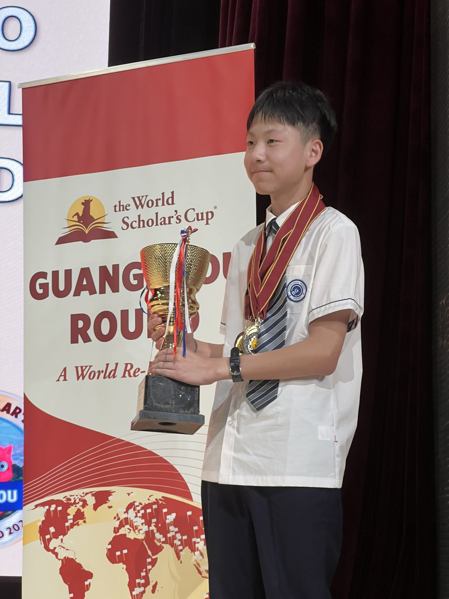
        </button>
        <button class="inset" type="button" data-gallery="ego" data-index="1" aria-label="Enlarge photo from China Thinks Big">
          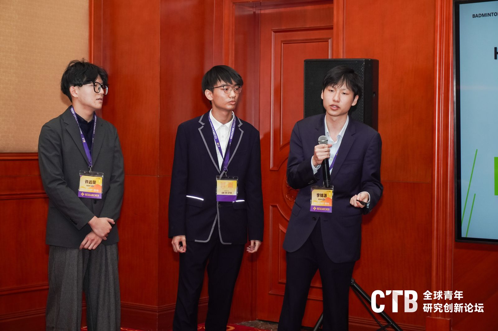
        </button>
      </div>
    </div>
  </header>

  <div class="ledger">
    <div class="wrap">
      <ul>
        <li><strong>2 papers</strong><span>published at international conferences in 2026</span></li>
        <li><strong>UKChO Gold</strong><span>United Kingdom Chemistry Olympiad, 2025</span></li>
        <li><strong>GameGala 1st</strong><span>top 1% of thousands of student developers worldwide</span></li>
        <li><strong>7 years</strong><span>First Violin in the school orchestra</span></li>
      </ul>
    </div>
  </div>

  <div class="featured">
    <div class="wrap">
      <div class="card">
        <div>
          <span class="kind">Documentary video</span>
          <h3>The Hundred-Year Influence of Addiction</h3>
        </div>
        <p>Motivated by my historical studies surrounding the Opium War, I set out to illustrate addiction across generations.</p>
      </div>
    </div>
  </div>

  <section class="chapter" id="passio">
    <div class="wrap">
      <div class="headword">
        <span class="en">Passion</span>
        <h2>Passio</h2>
        <p class="gloss">Latin for passion. Interestingly, it also means suffering, or disease.</p>
        <p class="lede">What do I actually do in my free time?</p>
        <p class="hint">Click any card to see photos.</p>
      </div>
      <div class="passions">
        <article>
          <h3>Badminton</h3>
          <p>Part of the school varsity team, I am a badminton addict. Since I was 10 I have been swinging a racket, starting in a park in Paris. Now I'm working hard to improve my skills in Shenzhen, China.</p>
          <button class="peek" type="button" data-gallery="badminton"><span class="stack">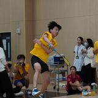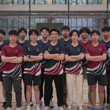</span>View 2 photos</button>
        </article>
        <article>
          <h3>Music</h3>
          <p>I've played violin for more than half my life and have taken up vocal singing in recent years. Music carried me through seven years in the school orchestra as a First Violin.</p>
          <button class="peek" type="button" data-gallery="music"><span class="stack">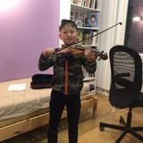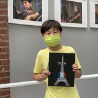</span>View 3 photos</button>
        </article>
        <article>
          <h3>French Film</h3>
          <p>I host a celebration of French filmography at school, keeping my roots in France alive and sharing French culture with my peers through cinema.</p>
          <button class="peek" type="button" data-gallery="film"><span class="stack">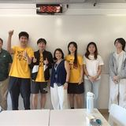</span>View photo</button>
        </article>
        <article>
          <h3>Supporting Peers</h3>
          <p>Driven to support my peers, I worked as a school peer tutor and Prefect to organize and directly support students academically.</p>
          <button class="peek" type="button" data-gallery="peers"><span class="stack">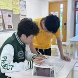</span>View photo</button>
        </article>
        <article>
          <h3>Gaming</h3>
          <p>Whether it's queuing up for ranked in VALORANT or tending crops in Stardew Valley, video games are an inseparable part of my life.</p>
          <button class="peek" type="button" data-gallery="gaming"><span class="stack">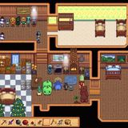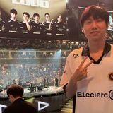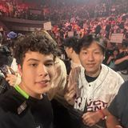</span>View 3 photos</button>
        </article>
        <article>
          <h3>Feasting</h3>
          <p>Even though I may not look like it, finding good food is my life's desire. The pictures speak for themselves.</p>
          <button class="peek" type="button" data-gallery="feasting"><span class="stack">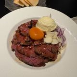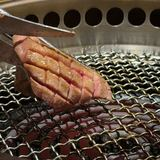</span>View 5 photos</button>
        </article>
        <article>
          <h3>Sleep</h3>
          <p>I sleep professionally. At least that's my excuse for dozing off, anytime, anywhere.</p>
          <button class="peek" type="button" data-gallery="sleep"><span class="stack">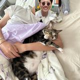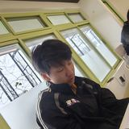</span>View 3 photos</button>
        </article>
        <article>
          <h3>Friends</h3>
          <p>With all of these activities, my friends can be found anywhere within.</p>
          <button class="peek" type="button" data-gallery="friends"><span class="stack">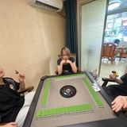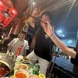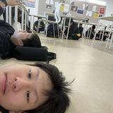</span>View 5 photos</button>
        </article>
      </div>
    </div>
  </section>

  <section class="chapter alt" id="laurea">
    <div class="wrap">
      <div class="headword">
        <span class="en">Laurel · Triumph</span>
        <h2>Laurea</h2>
        <p class="gloss">Latin for laurel, or triumph.</p>
        <p class="lede">A list of proud accomplishments.</p>
      </div>
      <div class="laurels">
        <div class="year">
          <h3>Grade 11</h3>
          <ol>
            <li><time>Apr 2026</time><span>First Place, GameGala 2026 (top 1% of thousands of student developers worldwide)</span><span class="medal gold">1st</span></li>
            <li><time>Apr 2026</time><span>Published researcher, DMML 2026</span><span class="medal">Paper</span></li>
            <li><time>Mar 2026</time><span>National Qualifier, China Thinks Big</span><span class="medal">National</span></li>
            <li><time>Jan 2026</time><span>First Place in AP Biology, Academic Awards Ceremony</span><span class="medal gold">1st</span></li>
            <li><time>Dec 2025</time><span>Bronze &amp; China Regional Honorable, Canadian Chemistry Olympiad</span><span class="medal">Bronze</span></li>
            <li><time>Oct 2025</time><span>Third Place, AI category, Google IgniteCS Expo</span><span class="medal">3rd</span></li>
          </ol>
        </div>
        <div class="year">
          <h3>Grade 10</h3>
          <ol>
            <li><time>Apr 2025</time><span>Gold &amp; Excellence Award, Canadian Chemistry Challenge</span><span class="medal gold">Gold</span></li>
            <li><time>Mar 2025</time><span>Bronze, AAPT Physics Bowl, Division 1</span><span class="medal">Bronze</span></li>
            <li><time>Jan 2025</time><span>Gold, United Kingdom Chemistry Olympiad</span><span class="medal gold">Gold</span></li>
            <li><time>Jan 2025</time><span>First Place in History, Academic Awards Ceremony</span><span class="medal gold">1st</span></li>
            <li><time>Dec 2024</time><span>Silver, Cambridge Chemistry Challenge Lower Sixth</span><span class="medal">Silver</span></li>
            <li><time>Nov 2024</time><span>Silver, British Physics Olympiad</span><span class="medal">Silver</span></li>
            <li><time>Aug 2024</time><span>Merit, John Locke Essay Competition (History)</span><span class="medal">Merit</span></li>
          </ol>
        </div>
        <div class="year">
          <h3>Grade 9</h3>
          <ol>
            <li><time>Jan 2024</time><span>First Place in History, Academic Awards Ceremony</span><span class="medal gold">1st</span></li>
          </ol>
        </div>
      </div>
    </div>
  </section>

  <section class="chapter" id="fabulae">
    <div class="wrap">
      <div class="headword">
        <span class="en">Stories · Histories</span>
        <h2>Fabulae</h2>
        <p class="gloss">Latin for stories, or myths.</p>
        <p class="lede">I am a man who reads stories of the past and attempts to make my own educated judgments about hundred year old parchment.</p>
      </div>
      <div class="stories">
        <article class="story">
          <p class="when">2024</p>
          <div class="body">
            <h3>The John Locke Essay Competition</h3>
            <p>My journey began rather timidly, with the 2024 John Locke Essay Competition and a deceptively simple question: why do civilizations collapse? I proposed an answer through energy return on investment, arguing that civilizations which could no longer sustain the systems supporting them were ultimately doomed. The essay was shortlisted.</p>
            <button class="doc" type="button" data-gallery="cert-locke" aria-label="Enlarge John Locke Institute certificate">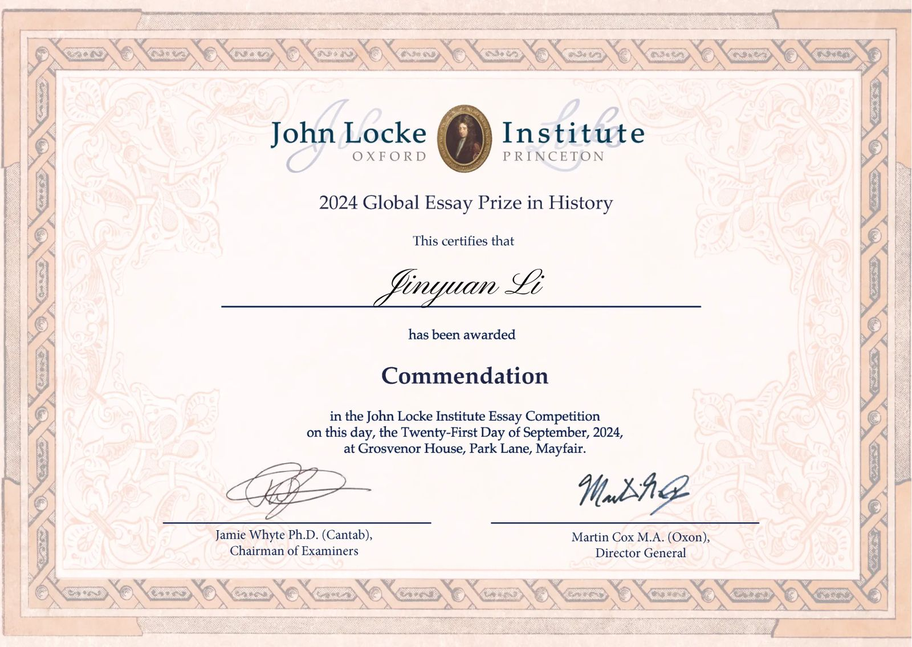</button>
            <div class="links"><a class="btn" href="https://drive.google.com/file/d/1oVZAziDlrHvfMrK1qBjnktJClkeMygPh/view?usp=sharing" target="_blank" rel="noopener">Read the essay (PDF) ↗</a></div>
          </div>
        </article>
        <article class="story">
          <p class="when">2025</p>
          <div class="body">
            <h3>Crafting my first paper</h3>
            <p>In 2025 my attention turned from civilizations to institutions. I examined the Qing Self-Strengthening Movement, asking why reforms intended to modernize a declining empire struggled to achieve their aims. My research became an argument about institutional constraint: reforms could not easily escape the structures they were designed to change.</p>
            <p class="cite">“Localized Success, Institutional Failure: The Limits of the Self-Strengthening Movement in Late Qing China.” Published in the International Conference on Education, Environment, Arts and Social Science 2026.</p>
            <button class="doc letter" type="button" data-gallery="cert-eeas" aria-label="Enlarge EEAS 2026 acceptance letter">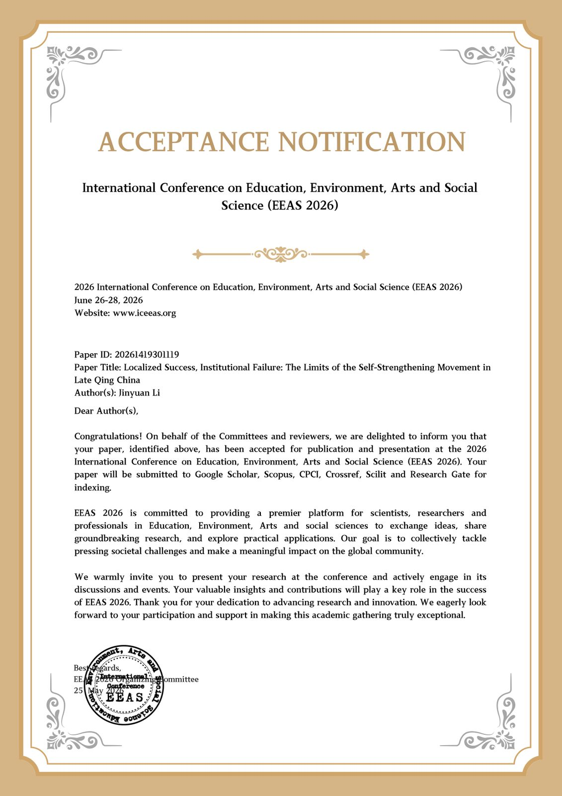</button>
            <div class="links"><a class="btn" href="https://drive.google.com/file/d/11DPT1roMaj6LJ1SyZiN5bicZN0eFecwm/view?usp=sharing" target="_blank" rel="noopener">Read the paper (PDF) ↗</a></div>
          </div>
        </article>
        <article class="story">
          <p class="when">Early 2026</p>
          <div class="body">
            <h3>A fledgling historical documentary</h3>
            <p>In early 2026 I worked with several friends to create a documentary about the French Revolution. Notably, we discussed the character of Louis Antoine de Saint-Just, the young “Archangel of Terror,” second only to Robespierre in the Jacobin faction.</p>
            <div class="links"><a class="btn" href="https://youtu.be/-d9eSyiYtLk" target="_blank" rel="noopener">Watch on YouTube ↗</a></div>
          </div>
        </article>
        <article class="story opus">
          <p class="when">Magnum opus</p>
          <div class="body">
            <h3>1840 Opium War Debates</h3>
            <p>My proudest work yet began with a question for <i>The Concord Review</i>: why did the First Opium War occur, and why did London choose to fight it?</p>
            <p>Immersing myself in the letters, biographies, and parliamentary debates of the men who shaped 19th-century British policy, I expected to find a straightforward narrative. Instead, reconstructing the 1840 parliamentary debates revealed an incredibly intricate web of competing priorities. The debates revealed how moral objections to the opium trade became entangled with concerns over imperial revenue, commercial interests, national honor, and political alliances.</p>
            <p>Within Parliament, questions of justice and the morality of the drug trade were continuously weighed against appeals to national honor, religious sentiment, and the intense need for partisan survival. For instance, Irish Repealers like Daniel O'Connell explicitly condemned the “hideous poison” of opium, yet ultimately voted to support the Whig government's military expedition to protect their domestic Irish reform agenda. This research profoundly shifted my perspective on democratic governance. Rather than simply sacrificing morality to partisanship, these statesmen were negotiating a multidimensional crisis. It laid bare the sheer difficulty, and perhaps the structural limitation, of a bipartisan democratic system forced to synthesize a vast spectrum of deeply entrenched human interests without reducing them to simple political allegiance.</p>
            <div class="links">
              <a class="btn" href="https://drive.google.com/file/d/1Bq2FpkpoIY7g7QO7wVCSOVXVgO_BJYsp/view?usp=sharing" target="_blank" rel="noopener">Read the paper (PDF) ↗</a>
              <span class="status">Under review at The Concord Review</span>
            </div>
          </div>
        </article>
        <article class="story">
          <p class="when">Extension</p>
          <div class="body">
            <h3>Individualism in history: Charles Elliot</h3>
            <p>That research led me to Charles Elliot. His career seemed to embody the difficulty of assigning simple judgments to historical actors. He surrendered the opium demanded by Lin Zexu, yet was later appointed British Plenipotentiary during the war; he was portrayed as weak, calculating, or diplomatic, depending on who was describing him. The more I read, the less satisfying any single version became.</p>
            <p>I ultimately curated a digital exhibition on Elliot: not to vindicate him, but to reconstruct the impossible choices and competing narratives surrounding him.</p>
            <button class="doc" type="button" data-gallery="elliot" aria-label="Enlarge exhibition title screen">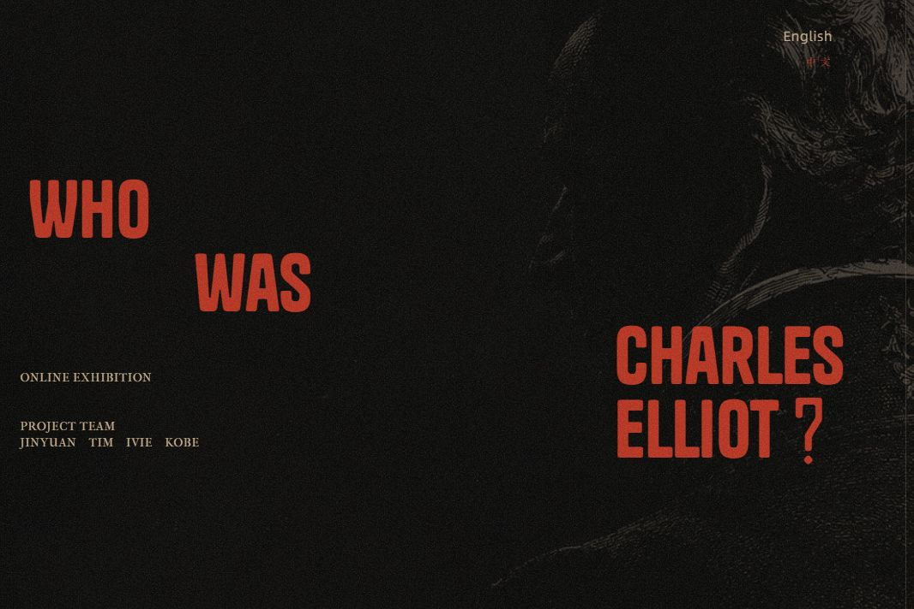</button>
            <div class="links"><a class="btn" href="https://charleselliot.framer.website/" target="_blank" rel="noopener">Visit the exhibition ↗</a></div>
          </div>
        </article>
        <article class="story">
          <p class="when">Geostrategy</p>
          <div class="body">
            <h3>Islands of Contention</h3>
            <p>My subsequent research examines the First Opium War as a collision between two incompatible spatial philosophies. Britain operated on a maritime expansionist logic, seeking offshore bases to project naval power; the Qing Empire relied on a continental system that prioritized core administrative stability over rigid coastal borders.</p>
            <p>This clash crystallized in the 1841 Convention of Chuenpi, when Britain traded the strategically vital but disease-plagued island of Zhoushan for Hong Kong. The Qing readily accepted the exchange to remove foreign threats from their geographic heartland, revealing a fluid approach to sovereignty that challenges modern assumptions about absolute territorial lines.</p>
            <div class="links"><a class="btn" href="https://drive.google.com/file/d/1maOhhCAZAE6imSdKDwSYwX3rbwbS60AI/view?usp=sharing" target="_blank" rel="noopener">Read the paper (PDF) ↗</a></div>
          </div>
        </article>
      </div>
    </div>
  </section>

  <section class="chapter alt" id="ars">
    <div class="wrap">
      <div class="headword">
        <span class="en">Science · Skill</span>
        <h2>Ars</h2>
        <p class="gloss">Latin for science, or a skill method.</p>
        <p class="lede">My passions in the scientific field.</p>
      </div>
      <div class="ars">
        <article class="wide">
          <span class="tag">Computer vision · Published at DMML 2026</span>
          <h3>AI-Powered Badminton Analytics</h3>
          <p>With two friends, I started a project that applies YOLO (You Only Look Once) computer vision models to recognize athletic motion and provide logic-based analysis of badminton matches. We took the project to the national stage in China Thinks Big and published a paper at the 7th International Conference on Data Mining &amp; Machine Learning (DMML 2026).</p>
          <div class="wide-shots">
            <figure class="shot">
              <button type="button" data-gallery="matchmotion" data-index="0">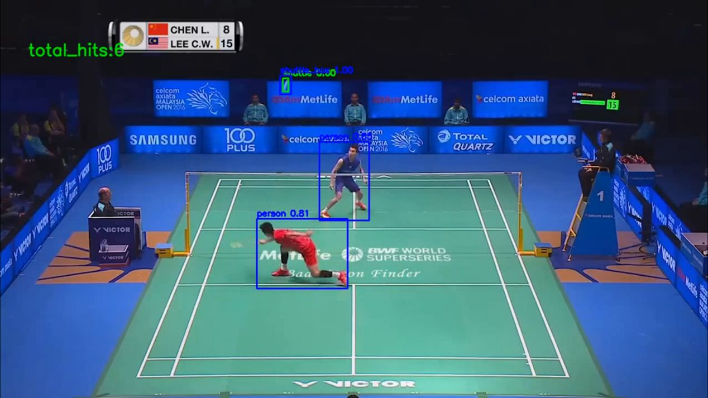</button>
              <figcaption>A screenshot of the analysis of a professional badminton match.</figcaption>
            </figure>
            <figure class="shot">
              <button type="button" data-gallery="matchmotion" data-index="1"></button>
              <figcaption>We took the project to the national stage in China Thinks Big.</figcaption>
            </figure>
          </div>
        </article>
        <article>
          <span class="tag">Materials science</span>
          <h3>Antibacterial Sports Grip</h3>
          <p>Prompted by real concerns about the sterility and durability of badminton grips, I joined a professor in research on a photodynamic antimicrobial polymer. We incorporated phthalocyanine, which produces sterile conditions under light, into polyurethane to open a new direction for grip sterility.</p>
          <figure class="shot">
            <button type="button" data-gallery="antibacterial">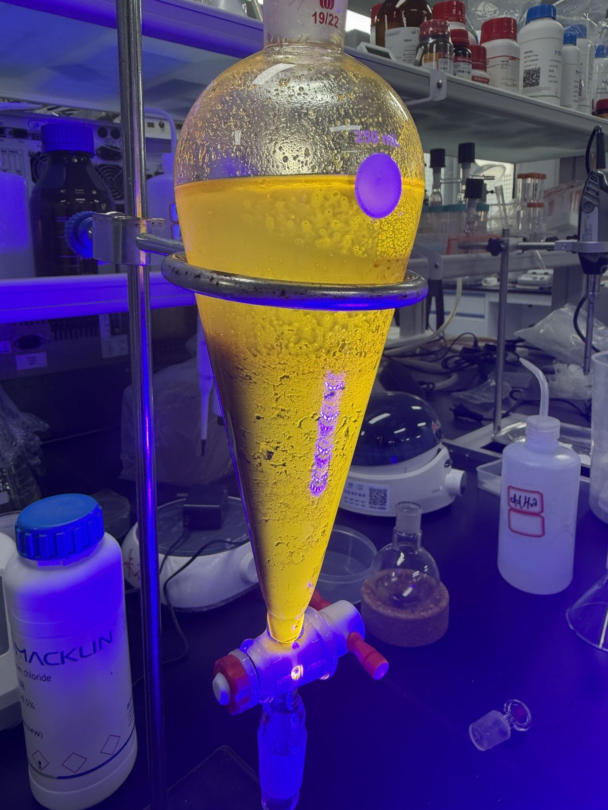</button>
            <figcaption>The mixture of phthalocyanine, which shines yellow under UV light.</figcaption>
          </figure>
        </article>
        <article>
          <span class="tag">Catalysis · University lab</span>
          <h3>Shenzhen Institute of Advanced Technology</h3>
          <p>I joined several professors in their hydrogen energy lab, extending my learning into the mechanisms of catalysis, including synthesizing nickel and cobalt catalysts from scratch.</p>
          <div class="shot-pair">
            <figure class="shot"><button type="button" data-gallery="catalyst" data-index="0">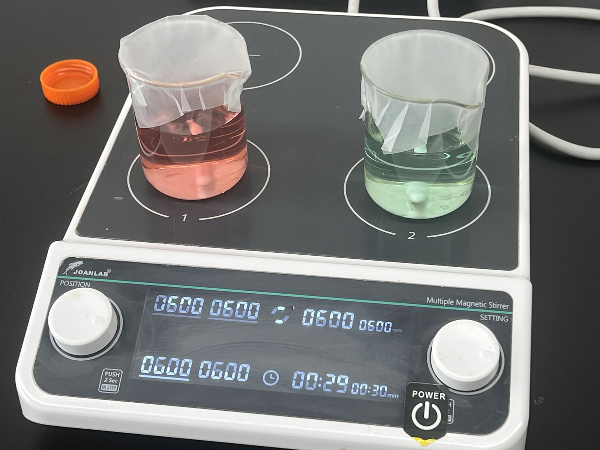</button></figure>
            <figure class="shot"><button type="button" data-gallery="catalyst" data-index="1">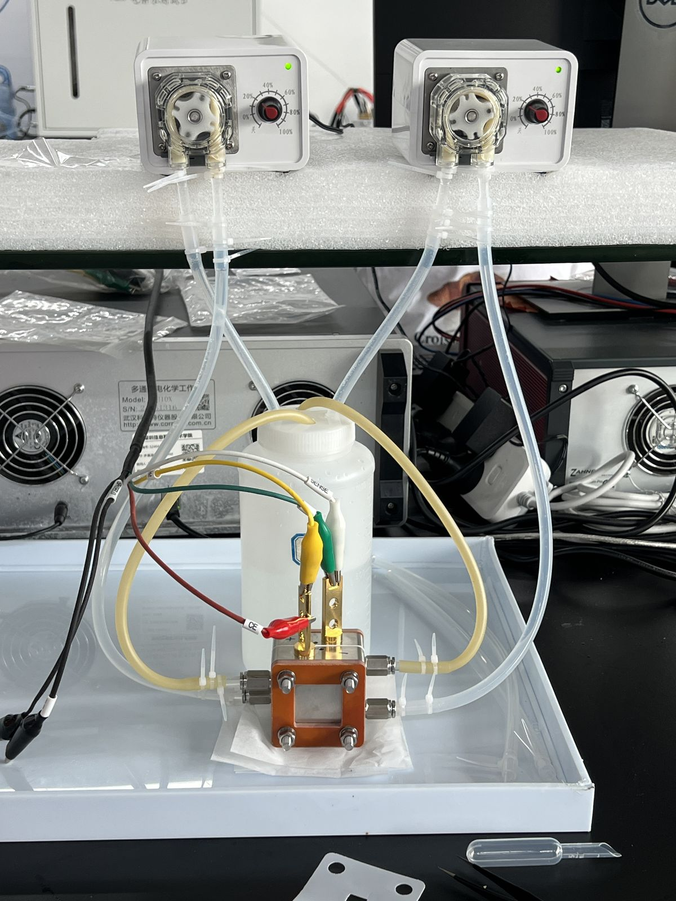</button></figure>
          </div>
          <p class="pair-caption">The pink and green catalysts of nickel and cobalt, and the apparatus enabling hydrogen energy reactions.</p>
        </article>
        <article>
          <span class="tag">Independent lab work</span>
          <h3>YBCO Superconductor Synthesis</h3>
          <p>With two teammates, I tried to synthesize a yttrium barium copper oxide superconductor using school lab apparatus. We were unsuccessful, but the failure drove me further into experimental chemistry.</p>
          <figure class="shot">
            <button type="button" data-gallery="ybco">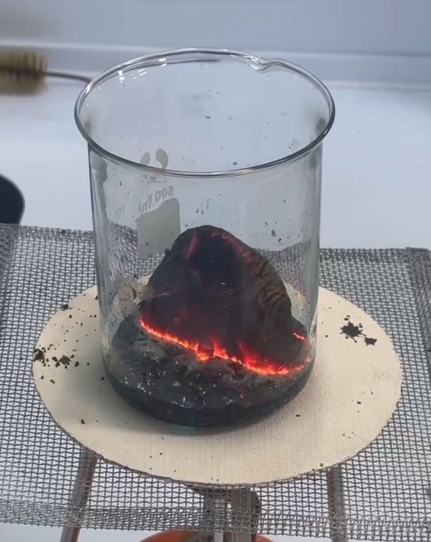</button>
            <figcaption>Combustion process of the YBCO mixture.</figcaption>
          </figure>
        </article>
        <article>
          <span class="tag">AI · Education</span>
          <h3>AI Chemistry Education App</h3>
          <p>A side project: an app that uses AI to recognize and analyze everyday objects, connecting textbook chemistry to real-life applications.</p>
          <figure class="shot">
            <button type="button" data-gallery="chemlens">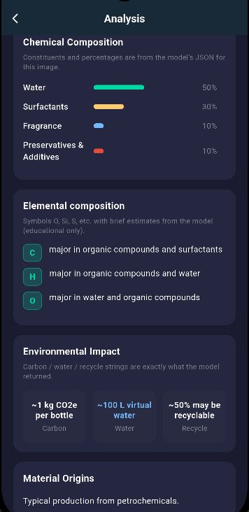</button>
            <figcaption>The results page of an analysis in the app.</figcaption>
          </figure>
        </article>
      </div>
    </div>
  </section>
</main>

<footer>
  <div class="wrap">
    <span class="name">Jinyuan Li</span>
    <span>Shenzhen College of International Education</span>
  </div>
</footer>

<dialog class="viewer" id="viewer" aria-label="Photo viewer">
  <div class="viewer-inner">
    <div class="viewer-top">
      <p><span class="viewer-title"></span><span class="viewer-count"></span></p>
      <button class="vbtn close" type="button">Close ✕</button>
    </div>
    <div class="viewer-stage">
      
      <button class="vbtn prev" type="button" aria-label="Previous photo">←</button>
      <button class="vbtn next" type="button" aria-label="Next photo">→</button>
    </div>
    <p class="viewer-caption"></p>
    <div class="viewer-thumbs"></div>
  </div>
</dialog>

<script>
  // Underline the nav link for the chapter currently in view.
  (function () {
    var links = document.querySelectorAll('nav ul a');
    var map = {};
    links.forEach(function (a) { map[a.getAttribute('href').slice(1)] = a; });
    if (!('IntersectionObserver' in window)) return;
    var io = new IntersectionObserver(function (entries) {
      entries.forEach(function (e) {
        if (!e.isIntersecting) return;
        links.forEach(function (a) { a.classList.remove('active'); });
        var a = map[e.target.id];
        if (a) a.classList.add('active');
      });
    }, { rootMargin: '-40% 0px -55% 0px' });
    Object.keys(map).forEach(function (id) {
      var el = document.getElementById(id);
      if (el) io.observe(el);
    });
  })();

  // Photo viewer: any element with data-gallery opens that gallery at data-index.
  (function () {
    function set(title, names, captions) {
      return { title: title, items: names.map(function (n, i) { return { name: n, caption: (captions && captions[i]) || '' }; }) };
    }
    var galleries = {
      ego: set('Ego', ['ego-award', 'ctb-matchmotion']),
      badminton: set('Badminton', ['badminton-1', 'badminton-2']),
      music: set('Music', ['violin-1', 'violin-2', 'violin-3']),
      film: set('French Film', ['french-film']),
      peers: set('Supporting Peers', ['peer-support']),
      gaming: set('Gaming', ['gaming-stardew', 'gaming-valorant-1', 'gaming-valorant-2']),
      feasting: set('Feasting', ['food-1', 'food-2', 'food-3', 'food-4', 'food-5']),
      sleep: set('Sleep', ['sleep-1', 'sleep-2', 'sleep-3']),
      friends: set('Friends', ['friends-1', 'friends-2', 'friends-3', 'friends-4', 'friends-5']),
      'cert-locke': set('John Locke Essay Competition', ['cert-john-locke']),
      'cert-eeas': set('EEAS 2026', ['cert-eeas']),
      elliot: set('Who Was Charles Elliot?', ['charles-elliot']),
      matchmotion: set('Badminton Analytics', ['matchmotion-analysis', 'ctb-matchmotion'],
        ['A screenshot of the analysis of a professional badminton match.', 'We took the project to the national stage in China Thinks Big.']),
      antibacterial: set('Antibacterial Sports Grip', ['antibacterial'], ['The mixture of phthalocyanine, which shines yellow under UV light.']),
      catalyst: set('Shenzhen Institute of Advanced Technology', ['catalyst-1', 'catalyst-2'],
        ['The pink and green catalysts of nickel and cobalt.', 'The apparatus enabling hydrogen energy reactions.']),
      ybco: set('YBCO Superconductor Synthesis', ['ybco-combustion'], ['Combustion process of the YBCO mixture.']),
      chemlens: set('AI Chemistry Education App', ['chemlens'], ['The results page of an analysis in the app.'])
    };

    var dlg = document.getElementById('viewer');
    var img = dlg.querySelector('.viewer-stage img');
    var title = dlg.querySelector('.viewer-title');
    var count = dlg.querySelector('.viewer-count');
    var caption = dlg.querySelector('.viewer-caption');
    var thumbs = dlg.querySelector('.viewer-thumbs');
    var prev = dlg.querySelector('.prev'), next = dlg.querySelector('.next');
    var current = null, index = 0;

    function show(i) {
      var items = current.items;
      index = (i + items.length) % items.length;
      var item = items[index];
      img.src = 'assets/' + item.name + '.jpg';
      img.alt = current.title + ' photo ' + (index + 1);
      caption.textContent = item.caption;
      count.textContent = items.length > 1 ? (index + 1) + ' / ' + items.length : '';
      thumbs.querySelectorAll('button').forEach(function (b, j) { b.setAttribute('aria-current', j === index ? 'true' : 'false'); });
    }

    function open(key, i) {
      current = galleries[key];
      if (!current) return;
      title.textContent = current.title;
      var many = current.items.length > 1;
      prev.hidden = next.hidden = thumbs.hidden = !many;
      thumbs.innerHTML = '';
      current.items.forEach(function (item, j) {
        var b = document.createElement('button');
        b.type = 'button';
        b.setAttribute('aria-label', 'Show photo ' + (j + 1));
        b.innerHTML = '';
        b.addEventListener('click', function () { show(j); });
        thumbs.appendChild(b);
      });
      show(i || 0);
      if (!dlg.open) dlg.showModal();
    }

    document.addEventListener('click', function (e) {
      var t = e.target.closest('[data-gallery]');
      if (t) open(t.dataset.gallery, Number(t.dataset.index || 0));
    });
    prev.addEventListener('click', function () { show(index - 1); });
    next.addEventListener('click', function () { show(index + 1); });
    dlg.querySelector('.close').addEventListener('click', function () { dlg.close(); });
    dlg.addEventListener('click', function (e) {
      if (e.target === dlg || e.target.classList.contains('viewer-stage')) dlg.close();
    });
    dlg.addEventListener('keydown', function (e) {
      if (!current || current.items.length < 2) return;
      if (e.key === 'ArrowLeft') show(index - 1);
      if (e.key === 'ArrowRight') show(index + 1);
    });
  })();
</script>
